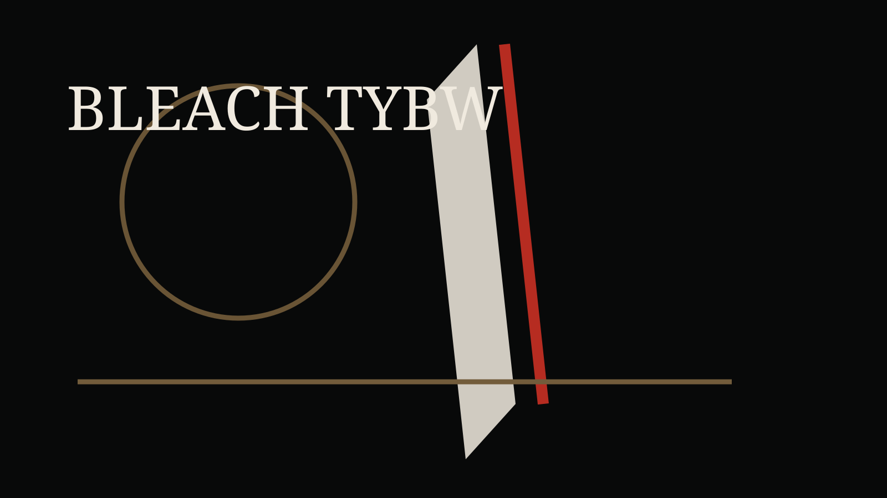

A página oficial da Aniplex lista a volta de BLEACH Thousand-Year Blood War em julho de 2026, com novas janelas de transmissão a partir do fim do mês. Para fãs de longa data, o retorno carrega sensação de conclusão; para novos espectadores, mostra uma indústria cada vez mais preparada para reativar franquias com acabamento contemporâneo.

Bleach sempre misturou design marcante, duelo espiritual e senso de estilo. A fase TYBW mostrou que continuações tardias podem funcionar quando respeitam o imaginário visual e atualizam ritmo, som e impacto de cena.
O que observar
Mais do que confirmar quem vence, a temporada vale por como organiza legado. Obras longas precisam equilibrar fãs antigos, espectadores que chegam por streaming e a pressão de transformar memória em produto atual.